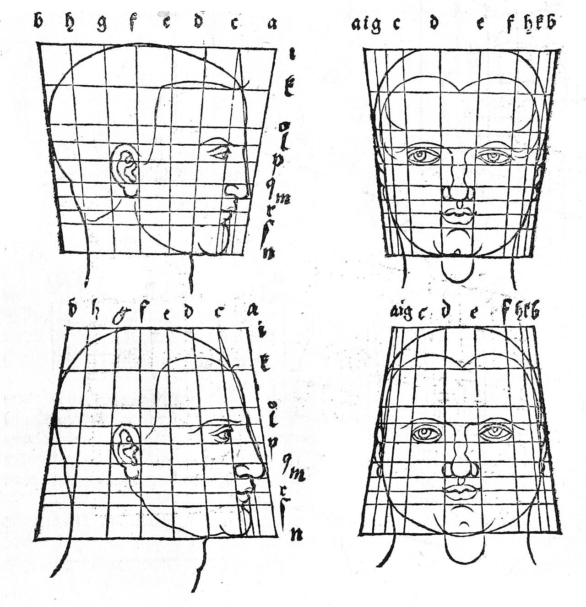

MF3D ‘Face-space’ construction¶
Parameterizing anatomical variations¶
One of the earliest studies of variation in anatomical proportions was by the German Renaissance artist Albrecht Dürer (1528), who described the application of deformation grids to mathematically describe variation in human facial anatomy. This approach was further developed by Scottish mathematical biologist D’Arcy Thompson in On Growth and Form (1917).
In the digital age, a pioneering study by Blanz & Vetter (1999) was the first to apply this approach to 3D face data acquired through laser scans of 200 human participants. Specifically, they used principal component analysis (PCA) to identify the major components of morphological variation in their sample. The resulting statistical description of ‘face space’ can be used to generate an infinite number of novel faces, which is now commercially available as the FaceGen software.
{kind=link}

Left: Dürer (1528) originally proposed mathematical descriptions of variation in face shape using deformation grid. Right: Leopold et al., 2006 used digital 3D scans of human faces to generate visual stimuli for neuroscientific research. The ‘face-space’ construct of facial identity variation features the average face at the center of a high-dimensional parameter space, in which distance from the center corresponds to facial distinctiveness.
Craniofacial morphology analysis for MF3D¶
The method for creating the macaque face-space used to generate identity variations in MF3D is described in Murphy & Leopold (2019) and illustrated in figure 5 from that paper (below). Briefly, Corresponding vertices were manually selected on a low polygon count (50,000 vertices) base mesh topology (created based on individual M02 of the CT data sample) and the high poly raw surface meshes of each other individual (panel A). This was performed in the commercial software Wrap3, which then applies a warping process to produces a surface mesh with topology A and morphology B (bottom left of panel A). This process was repeated for each individual in the sample, and the resulting mesh data were then manually cleaned by a professional digital artist (bottom right of panel A).
The cleaned corresponding meshes of all individuals were then imported into Matlab, their vertex positions were averaged to generate the mesh of the sample mean and a PCA was run.

Fig. 5. Morphable face model construction. A. Example of manual selection of corresponding vertices on the low-poly base mesh topology (topology A) created from individual M02 (morphology A) and the high-poly raw surface mesh of individual M09 (right). The warping process produces a surface mesh with topology A and morphology B (bottom left), which can then be manually edited (bottom right). B. Sample mean mesh surface. C. First five principal components (mean ± 2σ) of macaque face-space. D. Locations of original sample identities (n = 23) projected into principal component face-space (first 3 PC dimensions only). E. Distribution of CT scan voxel volume for each individual plotted against their Euclidean distance from the sample mean (σ). F. Percentage of variance in sample cranio-facial morphology explained by each principal component. G. Distributions of demographic variables for Rhesus macaque CT data sample. H. Age trajectory through face-space for males calculated by averaging 5 youngest (2nd column) and 5 oldest (4th column) males, and extrapolating. I. Sexual dimorphism trajectory through face-space calculated by averaging 5 males (2nd column) and 5 females (4th column), and extrapolating. Colour map indicates the displacement of each vertex relative to the mean (middle column) for each mesh. Meshes were aligned via Procrustes method.